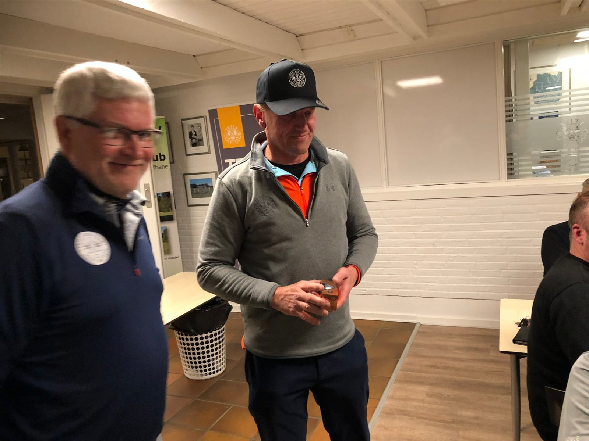
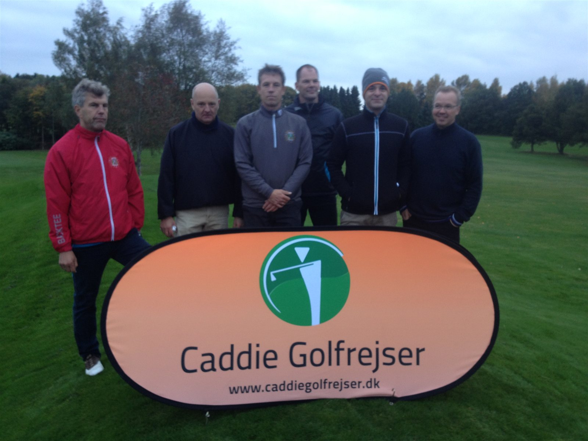
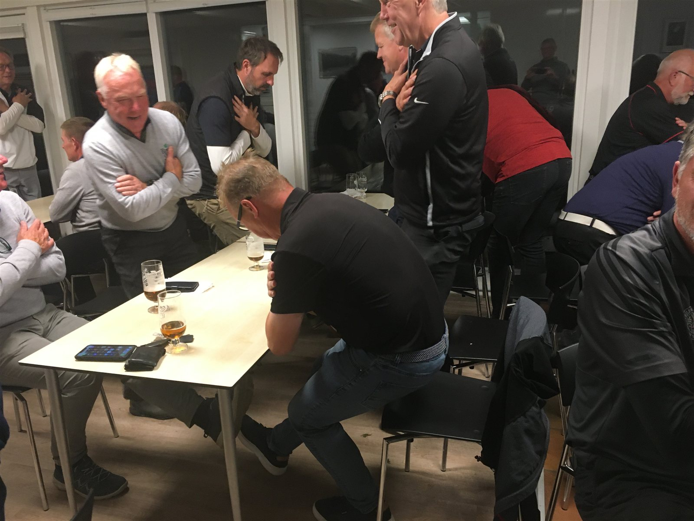

Gennemgående turneringer 2026

- Kvalifikation til ØSTJYSK MESTERSKAB - 2026
- Flest opnåede Stableford point gennemgående
- Bedste nettoscore i 5 slagspilsmatcher
- Bedste putter i 5 slagspilsmatcher
- Bedste bruttoscore i 5 slagspilsmatcher
- Vinder af Hallingtonmatcher
- Bedst på Par 3
- Årets Match
- Single Hulspil spilles i en A og en B række
- Par Hulspil
- Sidani Shoot Out
Vinderne får deres navne indgraveret på en tavle i Mens Sections klublokale.
Ad 1. ØSTJYSK MESTERSKAB
Se særskilt vedr. ØSTJYSK MESTERSKAB - 2026
Ad 2. Flest opnåede Stableford-point gennemgående
Samtlige matcher arrangeret af MS i sæsonen, hvor Stableford-point kan opgøres efter de almindelige golfregler, er tællende.
Ad 3. Bedste nettoscore i 5 slagspilsmatcher
De 5 bedste resultater i samtlige matcher arrangeret af MS i sæsonen hvor der spilles slagspil er tællende.
Ad 4. Bedste putter i 5 slagspilsmatcher
De 5 bedste resultater i samtlige matcher arrangeret af MS i sæsonen hvor der spilles slagspil er tællende.
Ad 5. Bedste bruttoscore i 5 slagspilsmatcher
De 5 bedste resultater i samtlige matcher arrangeret af MS i sæsonen hvor der spilles slagspil er tællende.
Ad 6. Vinder af Hallington
Samtlige matcher arrangeret af MS i sæsonen, hvor der spilles Hallington, er tællende.
Ad 7. Bedst på par 3 huller
Bedste spiller på par 3 huller, dvs. flest Birdies.
Ad 8. Årets Match
I årets match deltager alle Over-all vinderne fra hele sæsonen. Til dagen inviteres alle FC og præsidie medlemmer der har været mindst 3 år i præsidiet til en match mod det siddende præsidie.
Ad 9. Single Hulspil
Single Hulspilsturneringen vil i 2026 foregå som en knock-out turnering.
Hvis ikke man når at afvikle sin match inden næste lodtrækning, vil der blive trukket lod om, hvem der går videre til næste runde (lodtrækning foretages af Captain eller andet medlem af Præsidiet).
Fordelingen af handicap sker ved at finde frem til forskellen mellem de to kombattanter. Eks: Spiller 1 har 20 antal tildelte slag (3/4-handicap), mens spiller 2 har 12 antal tildelte slag. (3/4-handicap)
3/4 regnes fra tildelte slag!
Forskellen er 20 - 12 = 8. Spiller 1 har 8 slag på spiller 2 i deres indbyrdes match, og slagene fordeles efter banens handicapnøgle på de 8 sværeste huller. Ved AS efter 18 huller spilles der videre i sudden death fra hul 1 med det antal tildelte slag, som man havde ved matchens start.
Vinderne af henholdsvis A og B rækken kvalificerer sig direkte til deltagelse i ØSTJYSK MESTERSKAB - 2026. Finalen skal være afviklet senest 3. september 2026.
Ad 10. Par Hulspil
Par Hulspil foregår i år som knock-out turnering fra starten. Det vil sige at tabt match betyder et farvel til turneringen. Sidste spillerunde for par, er den 1. oktober 2026.
Spilles som en high-low turnering. Her skal alle fire spillere bruge deres ¾-handicap, hvor man dog nulstiller laveste handicap og fordeler de tre øvrige spilleres resterende antal tildelte slag i forhold til fordelingsnøglen.
På hvert hul sammenlignes bedste score fra de to sider med hinanden og dårligste score fra de to sider med hinanden. Der spilles om to point på hvert hul. Eksempel: Hold 1 opnår på hullet nettoscorerne 5 og 5. Hold 2 opnår nettoscorerne 5 og 6. Bedste resultat fra hold 1 er 5 og sammenlignet med bedste score fra hold 2, ligeledes 5 slag. Altså deles hullet. Dårligste resultat på hold 1 var 5, mens dårligste resultat hold 2 var 6, altså vinder hold 1 hullet og 1 point. Ved AS efter 18 huller spilles der videre i sudden death fra hul 1 med det antal tildelte slag, som man havde ved matchens start.
I par hulspilsturneringen gælder det, at den enkelte spiller følger slagspils reglerne, for derved at gøre det muligt at afvikle parspillet på de ordinære torsdage og samtidig deltage i dagens match.
Det anbefales dog at afvikle sine hulspils matcher på andre dage end torsdage.
Ad 11. "Sidani Shoot Out"

"Sidani shoot out" spilles over 10 torsdage, hvor de 7 bedste runder er tællende.
Captain udvælger et hul til dagens match. Hul nummer står på tilmeldingslisten. De point (stableford) der opnås på det udvalgte hul samles over de 7 torsdage til finalen. Det er ikke nødvendigt at deltage i samtlige 7 matcher for at kvalificere sig til finalen (Præsidiet noterer score på hullet). Finalen spilles på afslutningsdagen lørdag den 10 oktober 2026.
Finalen spilles som en "shoot out" med de 4 bedst placerede spillere. Er der flere der har samme antal point på 4. pladsen, spiller alle med i finalen.
Finalen spilles på Parken hul 9, umiddelbart efter afslutningsmatchen. Der spilles til der er fundet en vinder. I tilfælde af omspil afvikles det på følgende måde:
- Omspil spilles fra Tee 46
- Omspil spilles fra Tee 37
- Omspil og efterfølgende spilles fra 100 meter mærket.
Der spilles med de "streger", man har på Parken 9 i forhold til Sletten/Parken. Forhåbentlig vil alle MS'er være på Parken 9 eller på terrassen med en fadøl til at overvære finalen og være med til at sætte en god stemning til en vinder er fundet. Sponsor for turneringen er Sidani Proshoppen v/ Talal Sidani.
Afslutning

Som afslutning på sæsonen arrangeres lørdag den 10 oktober 2026 en sidste spilledag med efterfølgende fest, hvor præmier for årets gennemgående konkurrencer uddeles, og Mens Section's nye Captain og adjudanter for næste år udnævnes. Afslutningsfesten finder sted i vores eget klubhus, på dagen er vores Restaurant Den Lille Kok er matchsponsor.